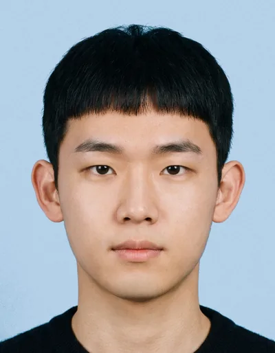
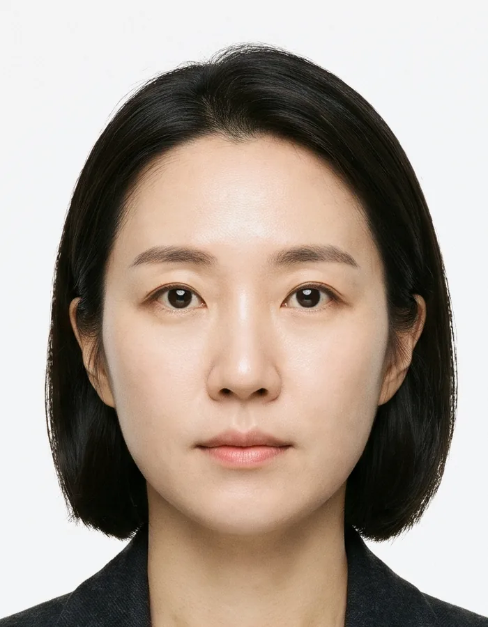
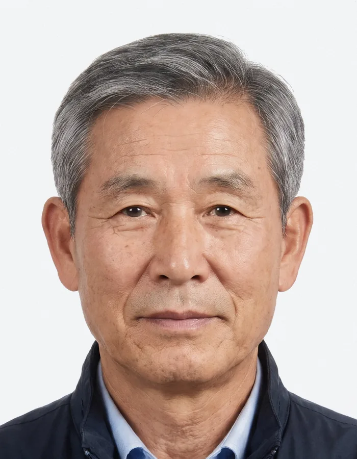
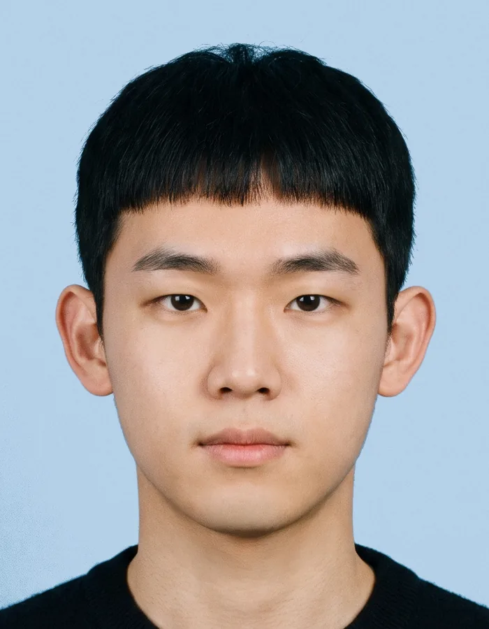
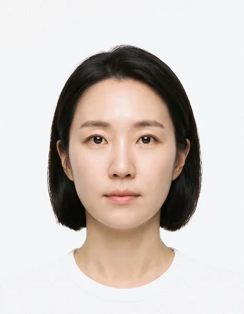
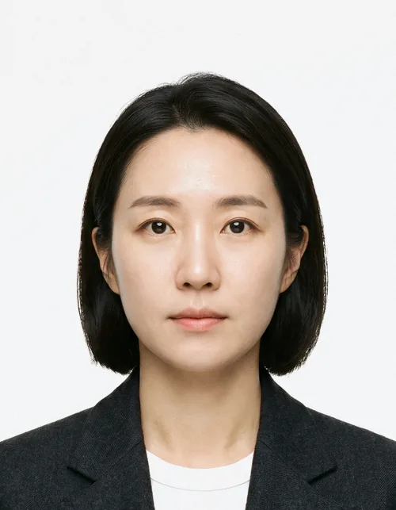
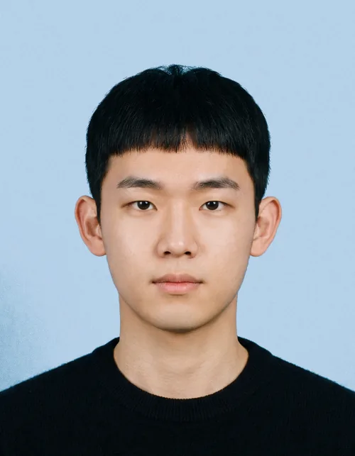
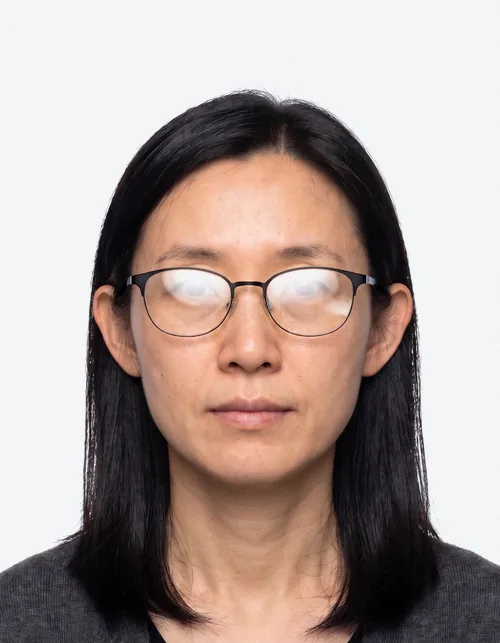
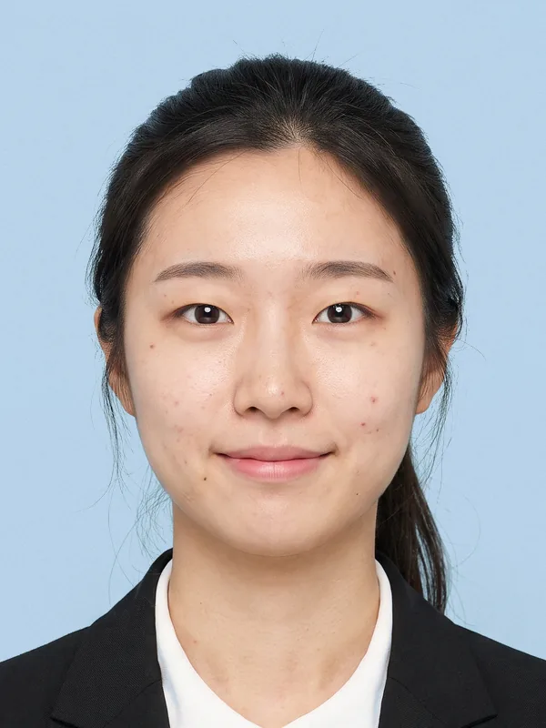
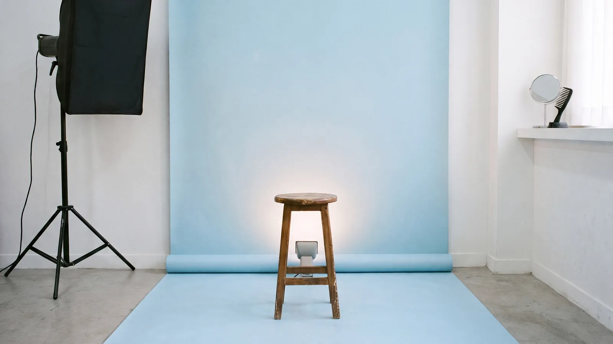

정면사진관
여권, 주민등록증, 운전면허, 비자, 취업용 반명함. 앉아서 5분, 인화지를 손에 쥐기까지 15분.
1994년 볕드리시청 앞 한 칸짜리 가게로 시작해 지금은 볕드리시에 세 곳이 있습니다. 지난해 9만 2천 명이 앉았습니다. 배경지 하늘색은 그때부터 같은 색이라, 사진만 보고 어디서 찍었는지 알아보는 분도 있습니다.

- 여는 시간
- 평일 9:00–20:00, 토요일 10:00–18:00. 일요일에는 마주봄점이 엽니다.
- 예약
- 받지 않습니다. 오시는 순서대로 찍습니다.
규격마다 다르게 잽니다
같은 3.5 × 4.5 cm라도 머리 길이와 눈높이에 기준이 있습니다. 아래 다섯 분은 오늘 각 규격대로 찍고 자른 사진이고, 다섯 장 모두 같은 배율로 실었습니다.
파란 띠는 위에서부터 정수리, 눈, 턱이 들어와야 하는 자리이고, 점선은 얼굴의 가운데입니다. 사진 왼쪽 괄호가 그 사진의 머리 길이입니다.
-

여권
3.5 × 4.5 cm, 흰 배경
- 머리 길이
- 정수리부터 턱까지 3.2–3.6 cm이 사진 3.40 cm
- 눈높이
- 사진 아래에서 2.3–2.7 cm이 사진 2.38 cm
- 값
- 15,000원, 15분
6개월 안에 찍은 사진이어야 합니다. 입은 다물고, 귀와 눈썹이 보이게 찍습니다. 흰 옷만 입으면 어깨선이 배경에 묻히니 어두운 겉옷을 걸칩니다.
-

주민등록증
3.5 × 4.5 cm, 흰 배경
- 머리 길이
- 여권과 같이 3.2–3.6 cm이 사진 3.40 cm
- 눈높이
- 사진 아래에서 2.3–2.7 cm이 사진 2.46 cm
- 값
- 15,000원, 15분
여권과 크기가 같습니다. 흰 배경을 권하는 곳이 많아 흰색으로 찍고, 머리 크기도 여권 기준으로 맞춥니다. 같은 자리에서 여권 사진을 함께 뽑아 가는 분이 많습니다.
-

운전면허
3.5 × 4.5 cm, 하늘색 배경
- 머리 길이
- 여권과 같이 3.2–3.6 cm이 사진 3.40 cm
- 눈높이
- 사진 아래에서 2.3–2.7 cm이 사진 2.36 cm
- 값
- 15,000원, 15분
무늬 없는 한 가지 색 배경이면 됩니다. 저희는 하늘색으로 찍고, 흰색이 필요하면 그 자리에서 배경지를 바꿔 찍습니다.
-
비자
5 × 5 cm, 흰 배경
- 머리 길이
- 2.5–3.5 cm이 사진 3.14 cm
- 눈높이
- 사진 아래에서 2.8–3.5 cm이 사진 3.01 cm
- 값
- 18,000원, 15분
나라마다 규정이 다릅니다. 기본은 가로세로 5 cm에 흰 배경입니다. 신청할 나라의 안내문을 가져오시면 그 숫자대로 맞춥니다. 안경은 렌즈에 비침이 없어야 합니다.
-
취업용 반명함
3 × 4 cm, 하늘색 배경
- 머리 길이
- 저희 기준 2.4–2.8 cm이 사진 2.60 cm
- 눈높이
- 사진 아래에서 2.2–2.6 cm이 사진 2.29 cm
- 값
- 25,000원, 30분, 보정 포함
정해진 규정이 없는 규격이라 저희 기준으로 맞춥니다. 어깨선까지 보이게 찍고, 입꼬리는 살짝 올려도 됩니다. 이력서 사진 칸에 맞춰 자릅니다.
규격은 바뀔 수 있습니다. 내기 전에 발급하는 곳의 최신 안내를 꼭 확인하세요. 이 숫자는 저희 가게가 2026년 11월에 쓰는 값입니다.
앉기 전에
거울 앞에서 1분이면 됩니다. 거울, 빗, 실핀, 물티슈, 그리고 95와 105 치수의 검은 재킷이 지점마다 있습니다.
-
옷
여권, 주민등록증, 비자처럼 흰 배경으로 찍는 규격에 흰 옷만 입으면 어깨선이 배경에 묻힙니다. 어두운 겉옷을 걸치세요. 재킷은 빌려 드리고, 값은 받지 않습니다.

다시 찍습니다 
이렇게 찍습니다 -
앞머리
앞머리가 눈썹을 덮으면 넘기거나 실핀으로 고정합니다. 이마부터 턱까지 얼굴 윤곽과 눈썹이 다 보여야 합니다.
다시 찍습니다 
이렇게 찍습니다 -
안경
렌즈에 조명이 비쳐 눈이 가려지면 다시 찍어야 합니다. 조명 각도를 먼저 바꿔 보고, 그래도 비치면 벗고 찍습니다. 색이 들어간 렌즈는 안 됩니다.

다시 찍습니다 이렇게 찍습니다
귀
귀가 보여야 한다는 곳이 있습니다. 귀를 드러내고 찍으면 어디에 내도 걱정이 없습니다. 긴 머리는 귀 뒤로 넘깁니다.
표정
입은 다물고 이가 보이지 않게 합니다. 눈썹을 올리거나 고개를 숙이지 않습니다. 취업용 반명함만 입꼬리를 살짝 올려도 됩니다.
보정은 여기까지
증명사진은 창구에서 사진과 얼굴을 번갈아 보며 같은 사람인지 확인하는 사진입니다. 그래서 오늘 아침 거울에 없던 것은 넣지 않고, 6개월 뒤에도 있을 것은 지우지 않습니다.
여권, 주민등록증, 운전면허, 비자 사진은 얼굴을 고치지 않습니다. 고친 사진은 접수에서 돌려받을 수 있습니다. 취업용 반명함은 하루 이틀이면 없어질 것까지만 손봅니다.

| 손보는 것 | 여권, 신분증, 비자 | 취업용 반명함 |
|---|---|---|
| 자르기, 수평 맞추기 | 합니다 | 합니다 |
| 밝기와 색을 찍힌 그대로에 가깝게 | 합니다 | 합니다 |
| 뾰루지, 면도 자국 | 안 합니다 | 지웁니다 |
| 잔머리, 옷 주름 | 안 합니다 | 정리합니다 |
| 점, 흉터, 주름 | 안 합니다 | 안 합니다 |
| 눈 키우기, 턱 깎기, 피부색 바꾸기 | 안 합니다 | 안 합니다 |
얼룩 없는 배경은 보정이 아니라 촬영으로 만듭니다. 배경지는 매일 아침 새로 내리고, 배경 조명을 따로 켜서 그림자를 지웁니다.
가격과 걸리는 시간
값은 4×6 인화지 한 장 기준이고, 사진 파일 세 개가 함께 갑니다. 세 지점 모두 같습니다.
| 규격 | 값 | 걸리는 시간 |
|---|---|---|
| 여권, 주민등록증, 운전면허3.5 × 4.5 cm, 8컷 | 15,000원 | 15분 |
| 비자5 × 5 cm, 6컷 | 18,000원 | 15분 |
| 취업용 반명함3 × 4 cm, 8컷, 보정 포함 | 25,000원 | 30분 |
- 같은 자리에서 규격 하나 더6,000원, 5분 더
- 30일 안에 다시 뽑기5,000원, 5분
- 재킷 빌리기받지 않습니다
점심 무렵(12:30–13:30)과 토요일 오전에는 줄이 생깁니다. 평일 오후 2시에서 4시 사이가 가장 한가합니다.
함께 드리는 파일 세 개
- 인화 크기 그대로300 dpi, 여권이면 413 × 531 픽셀온라인 신청에 가장 많이 쓰는 크기입니다.
- 크게600 dpi, 여권이면 827 × 1063 픽셀다시 뽑거나 다른 곳에 쓸 원본입니다.
- 용량 제한용100 KB 아래 JPG올릴 수 있는 용량이 작은 곳에 냅니다.
가게에서 QR을 찍으면 휴대폰으로 바로 받고, 그 링크는 7일 뒤 닫힙니다. 원본은 찍은 날부터 30일 보관하고 지웁니다. 바로 지워 달라고 하시면 보는 앞에서 지웁니다.
지점 세 곳
세 곳 모두 같은 하늘색 배경지에 얼굴 조명 하나, 배경 조명 하나를 씁니다. 값도 같으니 가까운 곳으로 오세요.

-
맞바라기 본점
볕드리시 맞바라기길 27, 1층가상 서비스입니다. 실제 주소가 아닙니다.
평일 9:00–20:00
토요일 10:00–18:00
일요일, 공휴일 쉽니다 -
마주봄점
볕드리시 마주봄로 112, 2층가상 서비스입니다. 실제 주소가 아닙니다.
평일 10:00–21:00
토요일, 일요일 11:00–19:00
공휴일 쉽니다 -
눈맞춤점
볕드리시 눈맞춤길 8, 1층가상 서비스입니다. 실제 주소가 아닙니다.
평일 9:00–19:00
토요일 10:00–16:00
일요일, 공휴일 쉽니다
마지막 촬영은 닫기 20분 전까지 받습니다. 일요일에 여는 곳은 마주봄점뿐입니다.
본점 오는 길
- 볕드리시청 민원실 정문에서 길을 건너 왼쪽으로 걸어서 4분.
- 맞바라기 정류장에서 내리면 바로 앞입니다.
- 주차는 가게 앞 한 칸, 10분까지입니다.